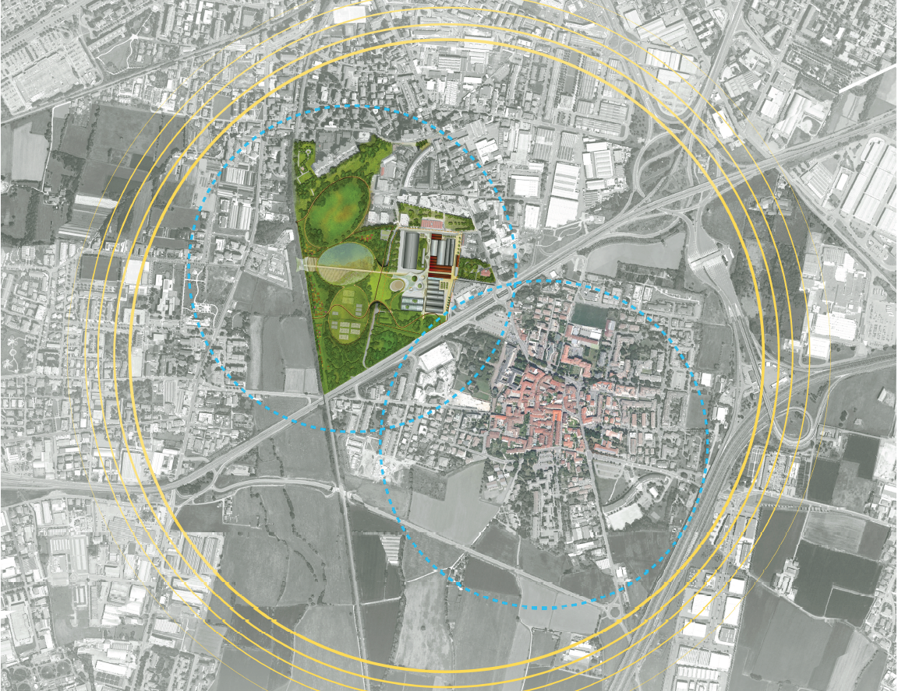
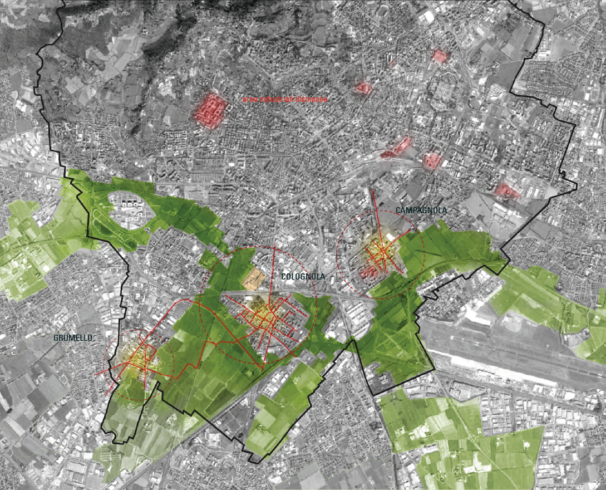

| La polarità del Palaghiaccio |
|  |
| Il
tema principale del nuovo intervento diventa la creazione di una nuova
polarità formata dalla connessione tra il Corpo Santo di Colognola e
l'area dello stabilimento ex Gres che con il nuovo palaghiaccio dovrà
diventare la scintilla in grado di attivare un processo di
rigenerazione urbana che deve coinvolgere
le aree limitrofe. Lo stretto rapporto tra Colognola e lo stabilimento ex Gres deve essere ripristinato per creare un nuovo polo in grado di attrarre i cittadini e generare benessere spostando l'attenzione sulle aree "periferiche" che dovranno diventare i nuovi centri di interesse delle città contemporanee. |
|  |
| Oltre
alla presenza dei Corpi Santi, è importante evidenziare le principali
aree industriali dismesse che possono diventare dei nuovi interventi in
grado di mettere in atto un processo complessivo di rigenerazione urbana
della città. Un sistema diffuso di interventi dovrà trasformare le aree degradate in nuovi poli in grado di rigenerare le aree circostanti. |